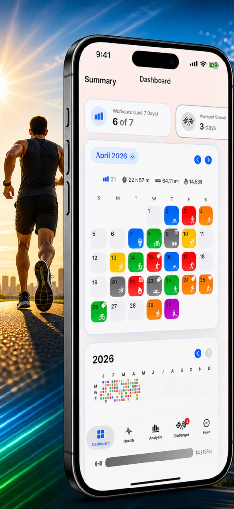
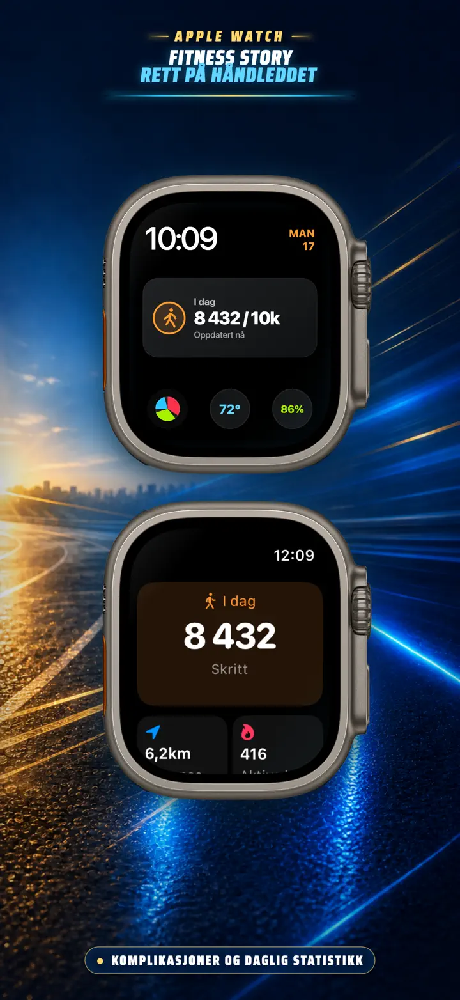
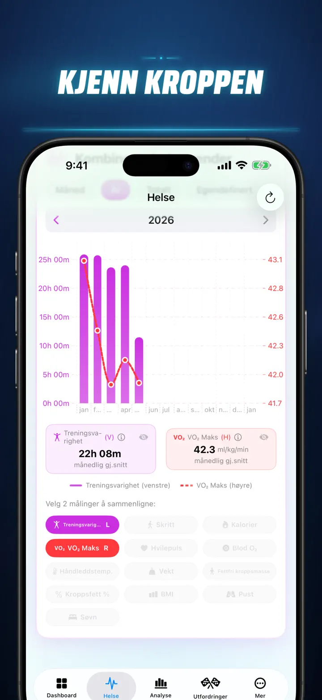
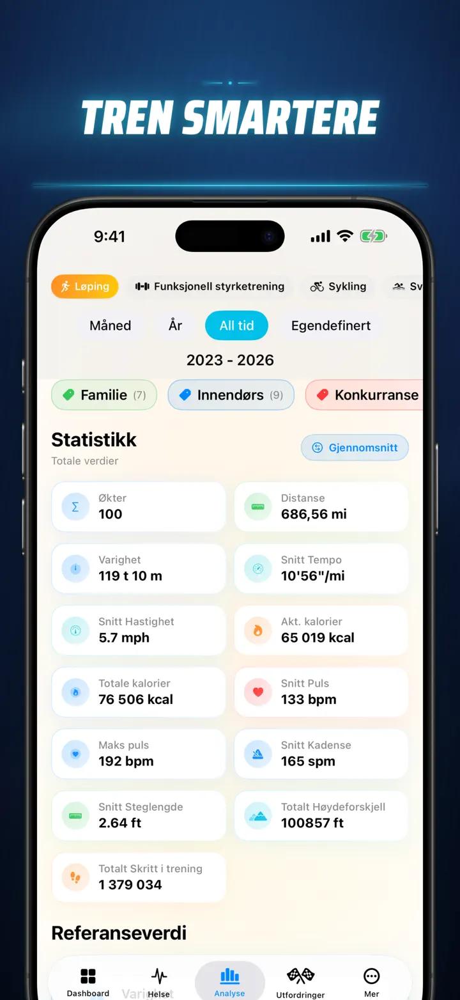
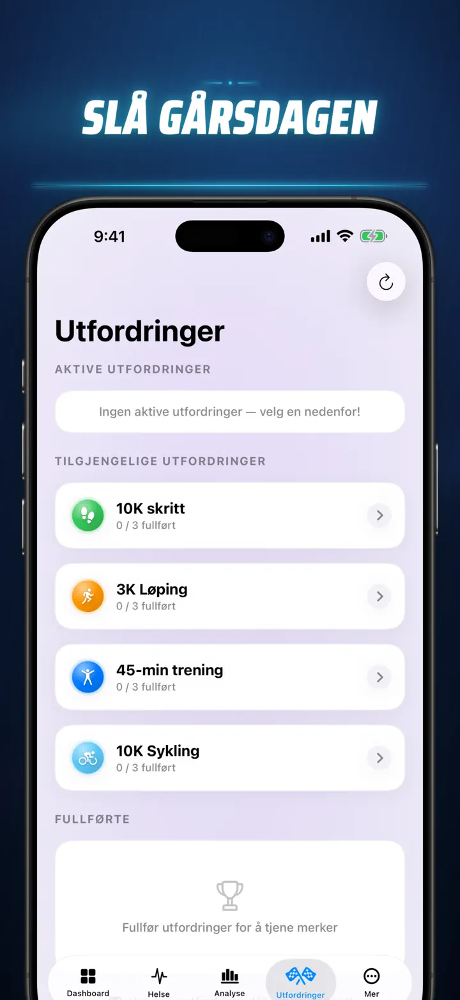
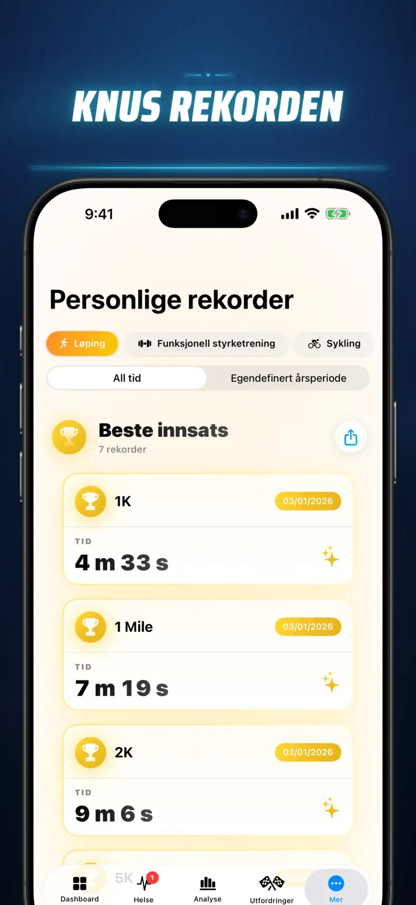
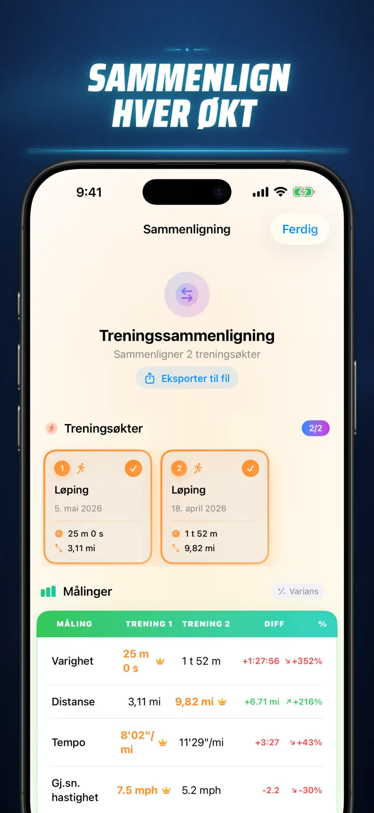
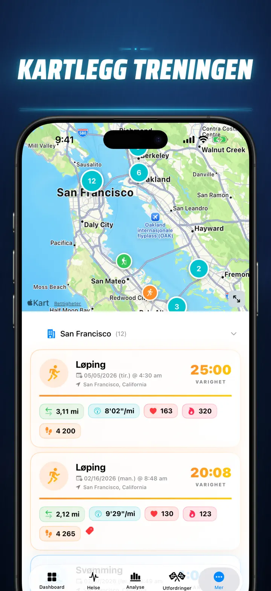
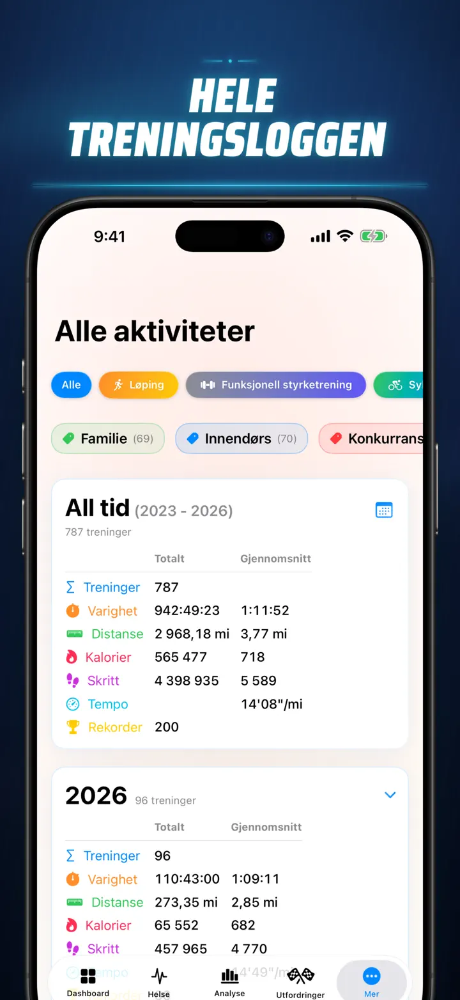

Fitness Story
Oppdag dine treningsinnsikter
Nå på Apple Watch: dagens skritt på hvilken som helst urskive, pluss en I dag-skjerm med distanse, kalorier og etasjer — rett fra Apple Helse.
Last ned i App Store
Om appen
Slutt å gjette. Begynn å vite. Fitness Story gjør om Apple Helse-dataene dine til den kraftigste og mest detaljerte analysen på iOS. Ingen kontoer. Ingen servere. Bare hele treningsreisen din, visualisert.
Enten du sporer søvnfaser, analyserer løpekadens eller jakter et maratonrekord – dette er alt-i-ett-dashbordet som hardt arbeid fortjener.
Fungerer med alle enheter og apper som synkroniserer til Apple Helse — Apple Watch, Garmin, Polar, Suunto, Zwift og flere.
PROFESJONELL ANALYSE
- Trend- og referansediagrammer: Bruk boks-whisker-plott for å se median, kvartiler og avvikere for hver idrettstype.
- Detaljerte nedbrytninger: Filtrer historikken etter tid på dagen, distanseintervaller, varighet, tempointervaller, høydegevinst, kadens og skritt lengde.
- Ranger alt: Ett trykk rangerer dagens målinger (distanse, tempo, puls osv.) mot hele historikken din. Vet umiddelbart om du oppnådde en "Topp 15%"-prestasjon.
- Bidragsgrafen: Et GitHub-stil varmekart over hele treningshistorikken din. Snu det for å se detaljert dagsstatistikk.
TRENINGSDETALJER NYTOLKET
- Smarte kart: Fargekod utendørsrutene etter hastighet, høyde eller pulssoner. (Inkluderer kinesisk kartkorrigering).
- Dyp delingsanalyse: Vis km- eller milsplitter med tempo, høyde, puls og kadenser for hvert enkelt runde.
- Pulssoner: Visualiser tid brukt i tilpassede soner 1–5 basert på alder og hvilepuls.
- Rik kontekst: Legg til bilder, formaterte notater, innsatsrangeringer (1–10) og egendefinerte tagger til hver økt.
KOMPLETT HELSEKONTROLLSENTER
- Alt Apple Watch-en din måler, visualisert på ett sted med daglige, ukentlige og årlige trender:
- Hjertehelse: Hvilepuls, VO2 Max (aldersjustert), blodsyrenivå og pustefrekvens.
- Kroppssammensetning: Vekt, kroppsfettprosent, mager kroppsmasse og BMI med trendindikatorer.
- Aktivitet og restitusjon: Skritt (med timevis nedbrytning), aktive vs. basale kalorier og håndleddstemperaturavvik.
- Avansert søvnsporing: Dyp-, kjerne-, REM- og våkne faser visualisert natt for natt.
- Korrelasjonsoverlegg: Legg flere helsemål oppå hverandre for å se hvordan søvn påvirker pulsen eller hvordan vekt påvirker VO2 Max.
SAMMENLIGN OG KONKURRÉR
- Treningssammenligning: Velg opptil 10 økter for side-ved-side-sammenligning. Se variansprosenter (f.eks. "+1,5 % raskere") for hver måling, per split!
- Sammenligningseksport: Vil du analysere med andre verktøy? Eksporter treningssammenligningen!
- Personlige rekorder: Automatisk sporing for 1K, 5K, 10K, halvmaraton, maraton og egendefinerte distanser. Tjen gull-, sølv- og bronsjetrofeer.
- Story-tidslinje: En kronologisk strøm av alle milepæler, rekorder og treningsøkter du noen gang har gjennomført.
DATAENE DINE, OVERALT
- Globalt kart: Se hvert sted du noen gang har trent på et interaktivt verdenskart med klynger.
- Kraftig eksport: Eksporter hele historikken din (eller egendefinerte perioder) til CSV eller JSON. Inkluderer fullstendige splitdata, kroppsmetrikk og metadata.
- iCloud-synkronisering: Favoritter, tagger, notater og vurderinger synkroniseres umiddelbart på alle enheter.
- Personvern først: Ingen skjulte servere. Dataene dine lever på enheten din og i din private iCloud.
- Svetten din forteller en historie. Det er på tide å lese den. Last ned Fitness Story i dag.
Last ned Fitness Story og lås opp innsikten!
Privacy Policy: https://masawata.net/privacy-policy.html Terms Of Service: https://www.apple.com/legal/internet-services/itunes/dev/stdeula/
Skjermbilder








Fitness Story
Nå på Apple Watch: dagens skritt på hvilken som helst urskive, pluss en I dag-skjerm med distanse, kalorier og etasjer — rett fra Apple Helse.
Last ned i App Store